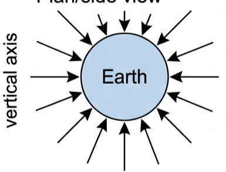
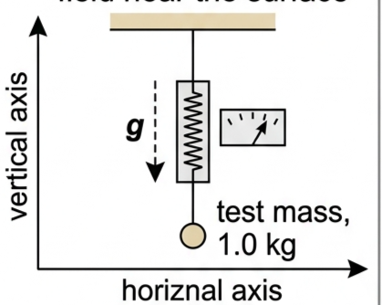
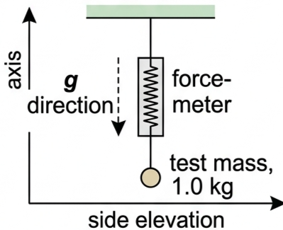
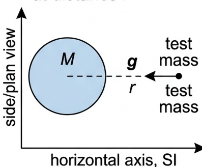
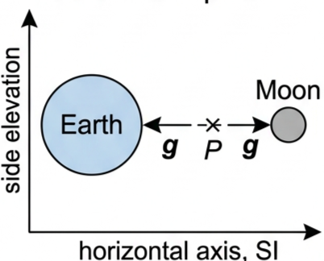
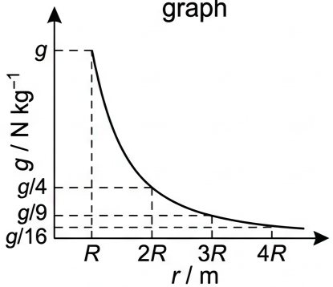
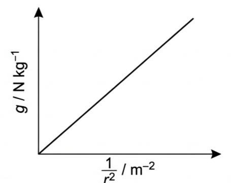
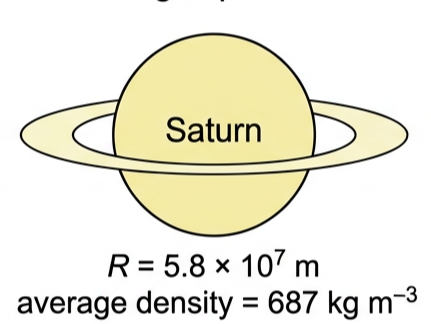
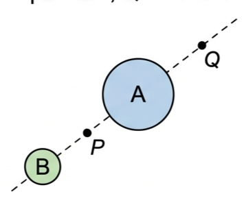

Part of D.1 Gravitational Fields · Unit D — IB Physics 2023
2 Lesson 2 of 6 · D.1 Gravitational Fields
Gravitational Field Strength
Every planet, moon and star sets up a gravitational field around itself. This lesson defines the field strength g, derives how it falls off with distance, and shows how to combine the fields of two masses.
🎯 Hook – the same rock, six different worlds
Drop a 1 kg rock near the Earth's surface and it falls with an acceleration of 9.8 m s⁻². Drop the same rock on the Moon and it falls at only 1.6 m s⁻². The rock hasn't changed — the gravitational field around it has. A gravitational field is a region around a mass in which another mass experiences a gravitational force. In practice we only bother naming the field when the source mass is astronomically large: a moon, a planet, a star.

Fig 1 — Radial field lines around the Earth. Arrows show the direction of the force on a mass; lines closer together near the surface show the field is stronger there.
💡 Diagnostic question (think – then read on) — the rock falls slower on the Moon. Is that because the rock is "lighter" there? No — its mass is unchanged. It is the Moon's gravitational field strength that is smaller than the Earth's, so the same mass experiences a smaller force and a smaller acceleration.
📐 Field lines and patterns
We represent a gravitational field on paper with field lines: a pattern of lines showing the direction of the force on a mass placed at any point. The field is strongest where the lines are closest together. Field lines never cross — that would mean the force acted in two different directions at the same place.
Close to the Earth the field lines spread out radially, converging toward the centre. But in a small region — the room you are sitting in — the field lines are, to a very good approximation, parallel and evenly spaced: a uniform field.

Fig 2 — A uniform gravitational field: parallel, evenly spaced lines, as in a small region near the Earth's surface where variations in the field are negligible.
📐 Defining gravitational field strength
What force would a given point experience per unit mass placed there? Answering this in general, rather than for one particular mass, lets us calculate the force on any mass placed at that point. Gravitational field strength, g, is the force per unit mass experienced by a small test mass placed at that point:
Definition
$$g = \frac{F}{m}$$
A test mass is an object of insignificant mass used in the definition and measurement of gravitational fields — "small" because a large mass could have a significant field of its own, disturbing the one being measured. g is a vector, given SI unit N kg⁻¹, and its direction is shown by the field-line arrows. Since Newton's second law gives a=F/m, g in N kg⁻¹ is numerically equal to the acceleration due to gravity in m s⁻².

Fig 3 — Finding g on an unknown planet: hang a 1.0 kg test mass on a force-meter. The reading, in newtons, is g in N kg⁻¹, and the field points along the string, toward the planet's centre.
The same value can be found from free fall: if a dropped mass covers 1.18 m from rest in 0.49 s, then \(1.18 = 0 + \tfrac12 a (0.49)^2\), giving \(a = 9.8\ \text{m s}^{-2}\) — numerically g = 9.8 N kg⁻¹.
📐 Field around a planet — the inverse-square law
Combine \(g = F/m\) with Newton's law of gravitation, \(F = GMm/r^2\) (taking m = m₁, the small test mass, and M = m₂, the large mass):
$$g = \frac{F}{m} = \frac{GMm/r^2}{m}$$
Field strength at distance r from a mass M
$$g = \frac{GM}{r^2}$$
The test mass m cancels out — every object, whatever its mass, experiences the same g at a given point, and so falls with the same acceleration. Like gravitational force, g obeys an inverse-square law: double r and g falls to a quarter; treble r and g falls to a ninth.
⚠️ Common mistake — r in g = GM/r² is the distance from the centre of the planet or moon. It is not the radius, unless you are finding g at the surface itself, where r = R.
Below the surface, g = GM/r² no longer applies, because the planet can't be treated as a point mass any more — mass to the side also pulls on the test mass. At the very centre, surrounding mass pulls equally in all directions, so g = 0. Moving from the centre out to the surface, g increases.

Fig 4 — For r ≥ R, g = GM/r². Inside the planet (r < R) this equation breaks down; g rises from zero at the centre to its surface value.
It's tempting to assume bigger planets always have stronger surface fields. Using M = ρ × volume = ρ(4/3)πR³ in g = GM/R² gives \(g = \tfrac{4}{3}G\rho\pi R\) — so g at the surface is proportional to R only if the average density ρ is the same. Earth is the densest planet in the Solar System (5510 kg m⁻³); the gaseous outer planets have much lower densities, Saturn least of all (687 kg m⁻³).
📐 Combining gravitational field strengths
A mass can sit inside two or more significant fields at once — we are in the fields of both the Earth and the Moon, though the Moon's contribution at Earth's surface is normally negligible next to the Earth's own. Fields are vectors, so the total field at a point is the vector sum of the individual fields. When the point lies on the line joining the masses, that sum is just addition or subtraction of magnitudes, with sign showing direction.

Fig 5 — At point P between Earth and Moon, the two fields are equal and opposite: a spacecraft there feels no resultant gravitational force. Closer to Earth, the resultant field points toward Earth; closer to the Moon, it points toward the Moon.
📈 Graphs every examiner uses
Graph type
Axes (X, Y)
Shape
What to read
Inverse-square
r (m), g (N kg⁻¹)
Steep drop, asymptotic toward zero
g ∝ 1/r²: at 2R, g/4; at 3R, g/9; at 4R, g/16
Linearised
1/r² (m⁻²), g (N kg⁻¹)
Straight line through the origin
Gradient = GM → find the source mass M
Inside a planet
r, from centre to surface R, g
Rises linearly from 0 at r=0 to g at r=R
Field is zero at the centre; equation g=GM/r² only valid for r ≥ R

Fig 6 — g vs r for r ≥ R: dashed lines mark g/4 at 2R, g/9 at 3R, g/16 at 4R.

Fig 7 — Plotting g against 1/r² straightens the curve: gradient = GM.
✍️ Worked example 1 – surface field strength (D1.5)
Determine the gravitational field strength on the surface of a planet with mass 4.87×10²⁴ kg and radius 6.05×10⁶ m.
1
Identify: at the surface, r = R, so use g = GM/R².
2
Data: M = 4.87×10²⁴ kg, R = 6.05×10⁶ m, G = 6.67×10⁻¹¹ N m² kg⁻².
Answer: g ≈ 11 N kg⁻¹ (accepted value 10.4 N kg⁻¹). Saturn's huge radius is offset by its very low density.

Fig 9 — Saturn is nearly ten times Earth's radius but only about an eighth as dense, so its surface g is close to Earth's.
✍️ Worked example 3 – combining two fields (D1.7)
P is midway between the centres of planets A and B. At P, the field due to A is 4.0 N kg⁻¹ and due to B is 3.0 N kg⁻¹. Q is the same distance from A as P, but on the far side of A from B. (a) Find the resultant field at P. (b) Find the resultant field at Q.
1
Identify: P and Q both lie on the line through A and B, so add the fields as signed magnitudes. Take the field toward B as positive.
2
Data: g_A(P) = 4.0 N kg⁻¹ (toward A), g_B(P) = 3.0 N kg⁻¹ (toward B).
3
Equation (a): \((-4.0)+(+3.0)=-1.0\ \text{N kg}^{-1}\). (b) g_A(Q) has the same magnitude as g_A(P) (same distance from A) but points the opposite way; g_B(Q) = g_B(P)/9, since Q is three times as far from B, but still points the same way as g_A(Q): \((+4.0)+(3.0/9)\).
4
Answer: (a) 1.0 N kg⁻¹ toward A. (b) 4.3 N kg⁻¹ toward A and B.

Fig 10 — Not to scale. P and Q are the same distance from A; Q is three times as far from B as P is.
🌍 Real-world: satellites and orbital height
Many satellites orbit at around 300 km above the Earth's surface. At that height (r = 6.67×10⁶ m from the centre), g works out to about 8.95 N kg⁻¹ — still 91% of the surface value. That's why astronauts on the International Space Station aren't "escaping gravity": they're in near-continuous free fall, orbiting rather than falling straight down.
✓ Examiner tip: for orbital-height questions, always convert the height above the surface to a distance from the centre (r = R + h) before substituting into g = GM/r².
🚀 HL extension – the field beneath the surface
g = GM/r² only holds for r ≥ R, because it treats the planet as a point mass. Below the surface, mass to the side of the test point also pulls on it. At the very centre, mass pulls equally in every direction, so g = 0 exactly. Moving outward from the centre, g rises, reaching the surface value g = GM/R² exactly at r = R.
Challenge: sketch g against r from r = 0 to r = 2R. (Answer: a straight line rising from (0, 0) to (R, g); then an inverse-square curve falling from (R, g) toward (2R, g/4).)
🤔 TOK – can a field explain gravity?
What kinds of explanations do natural scientists offer?
Gravitational, electric and magnetic forces can act instantaneously across space, even through a vacuum, and — for gravity — across enormous distances. The concept of a field describes the intermediate space and lets us calculate forces there, but it doesn't explain why the forces exist in the first place. Scientists can't simply say "that's just the way it is" — they look for a deeper, more fundamental account. Finding one, for gravity, is beyond the requirements of this course.
⚠️ Trap corner – common mistakes
Misconception
Correct view
r in g = GM/r² is the planet's radius
r is the distance from the centre — equal to the radius only when finding g exactly at the surface
A more massive test mass experiences a bigger g
g is a property of the field, not the test mass; every mass at a given point feels the same g
Bigger planets always have stronger surface gravity
Surface g ∝ R only if average density is the same — Saturn is huge but not dense, so its g is close to Earth's
g = GM/r² works below the surface
Only valid for r ≥ R; below the surface g falls to zero at the centre, since it can't be treated as a point mass
⚠️ Most common slip: mixing units — km left un-converted to m in r. 300 km must become 3.00×10⁵ m before it goes anywhere near g = GM/r², or the answer is out by a factor of 10⁶.
g = F/mg = GM/r²Units: N kg⁻¹ = m s⁻²g ∝ 1/r² (r ≥ R)g ∝ R (equal density only)g = 0 at centreFields add as vectorsCommon r ≠ common R
Practice check — multiple choice
1. Gravitational field strength at a point is defined as:
A the force on any mass placed there
B the force per unit mass on a small test mass placed there
C the mass per unit force needed to hold a test mass there
D the acceleration of the mass creating the field
2. The gravitational field strength at distance r from a planet's centre is 6.0 N kg⁻¹. What is it at 3r?
A 2.0 N kg⁻¹
B 0.67 N kg⁻¹
C 18 N kg⁻¹
D 54 N kg⁻¹
3. Which statement about gravitational field strength is NOT true?
A g is a vector quantity
B in g = F/m, m is the mass creating the field
C g has SI unit N kg⁻¹, equivalent to m s⁻²
D gravitational field lines never cross
4. Planet X has twice the radius of planet Y but the same average density. Compared to Y's surface field, X's surface field strength is:
A the same
B twice as strong
C four times as strong
D half as strong
5. At the exact centre of a uniform planet, the gravitational field strength is:
A maximum
B equal to the surface value
C zero
D infinite
Practice check — fill in the blanks
Complete the statements:
Gravitational field strength is defined as the per unit experienced by a small test mass. Its SI unit is , which is numerically equal to the due to gravity.
Exam‑style questions
Exam question · Sketch
Q13. Make a sketch of the gravitational field in the room where you are sitting. [2 marks]
✓ A set of parallel, evenly spaced arrows, all pointing straight down (toward the Earth's centre). ✓ Approximately uniform, since the room is far too small for the Earth's curvature or the 1/r² variation to be noticeable.
Exam question · Calculate
Q14. The weight of a 12 kg mass on the surface of Mercury would be 44 N. Calculate the gravitational field strength on the surface of the planet. [2 marks]
✓ g = F/m = 44/12 ✓ g = 3.7 N kg⁻¹.
Exam question · Determine / Calculate
Q15. (a) Determine the gravitational field strength at a height of 300 km above the Earth's surface (radius of Earth 6.37×10⁶ m, mass of Earth 5.97×10²⁴ kg). Many satellites orbit at about this height. (b) Calculate this value as a percentage of the accepted surface value of g. [4 marks]
✓ (a) r = R + h = 6.37×10⁶ + 3.00×10⁵ = 6.67×10⁶ m ✓ g = GM/r² = (6.67×10⁻¹¹)(5.97×10²⁴)/(6.67×10⁶)² = 8.95 N kg⁻¹ ✓ (b) 8.95/9.8 × 100 = 91.3%.
Exam question · Determine
Q16. The gravitational field strength of a planet is 5.8 N kg⁻¹ at a distance of 2.1×10⁴ km from its centre. Determine the field strength at a distance 1.4×10⁴ km further away. [3 marks]
✓ New distance r₂ = 2.1×10⁴ + 1.4×10⁴ = 3.5×10⁴ km ✓ g ∝ 1/r², so g₂ = g₁(r₁/r₂)² = 5.8 × (2.1/3.5)² ✓ g₂ = 2.1 N kg⁻¹.
Exam question · Draw
Q17. Draw a sketch graph to show how the gravitational field strength varies from the centre of the Earth to a distance of 12.8×10⁶ m (radius of Earth 6.4×10⁶ m). [3 marks]
✓ From r = 0 to r = R (6.4×10⁶ m): straight line rising from g = 0 at the centre to the surface value g. ✓ From r = R to r = 2R (12.8×10⁶ m, the given upper limit): inverse-square curve falling from g at R to g/4 at 2R. ✓ Curve is continuous at r = R, with no sudden jump.
Exam question · Calculate / State
Q18. (a) Calculate the gravitational field strength on the surface of the Moon (mass 7.35×10²² kg, radius 1740 km). (b) Calculate the gravitational field strength at a point on the Earth's surface due to the Moon (distance between the Moon's centre and the Earth's surface is 3.8×10⁸ m). (c) State one effect that the Moon's gravitational field has on the Earth. [5 marks]
✓ (a) g = GM/R² = (6.67×10⁻¹¹)(7.35×10²²)/(1.74×10⁶)² = 1.62 N kg⁻¹ ✓ (b) g = GM/r² = (6.67×10⁻¹¹)(7.35×10²²)/(3.8×10⁸)² = 3.4×10⁻⁵ N kg⁻¹ ✓ (c) the Moon's gravity causes the ocean tides on Earth.
Exam question · Estimate
Q19. Titan, a moon of Saturn, has an average density of 1900 kg m⁻³. The gravitational field strength on its surface is approximately 14% of that on Earth. Estimate Titan's radius using g = (4/3)Gρπr. [4 marks]
✓ g = 0.14 × 9.8 = 1.37 N kg⁻¹ ✓ rearranging: r = g / [(4/3)Gρπ] ✓ r = 1.37 / [(4/3)(6.67×10⁻¹¹)(1900)π] ✓ r ≈ 2.6×10⁶ m.
Exam question · Calculate
Q20. Consider Fig 10 again, but with different data. Planet A has a gravitational field of 15 N kg⁻¹ at Q, but the combined field at the same point is 16 N kg⁻¹. Calculate the combined field at point P. [4 marks]
✓ g_B(Q) = 16 − 15 = 1.0 N kg⁻¹ ✓ Q is three times as far from B as P is, so g_B(P) = 9 × g_B(Q) = 9.0 N kg⁻¹ ✓ g_A(P) has the same magnitude as g_A(Q): 15 N kg⁻¹ (opposite direction at P) ✓ combined field at P = 15 − 9 = 6.0 N kg⁻¹ toward A.
Exam question · Draw
Q21. The gravitational fields of the Sun and the Moon cause the tides on the world's oceans. The highest tides occur when the resultant field is greatest. Draw a sketch to show the relative positions of the Earth, Sun and Moon when the resultant field on the Earth's surface is (a) greatest (b) weakest. [3 marks]
✓ (a) Greatest: Sun, Earth and Moon roughly in a straight line (new moon or full moon), so the Sun's and Moon's fields reinforce — spring tides. ✓ (b) Weakest: Sun–Earth and Earth–Moon lines at right angles (first or third quarter), so the fields partly cancel — neap tides.